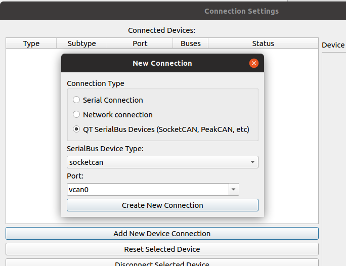
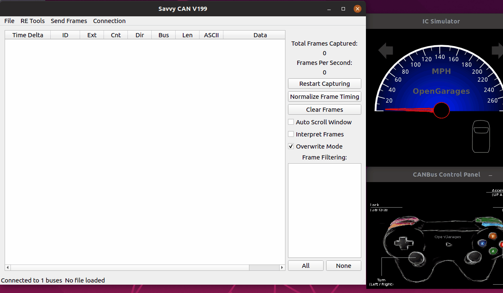
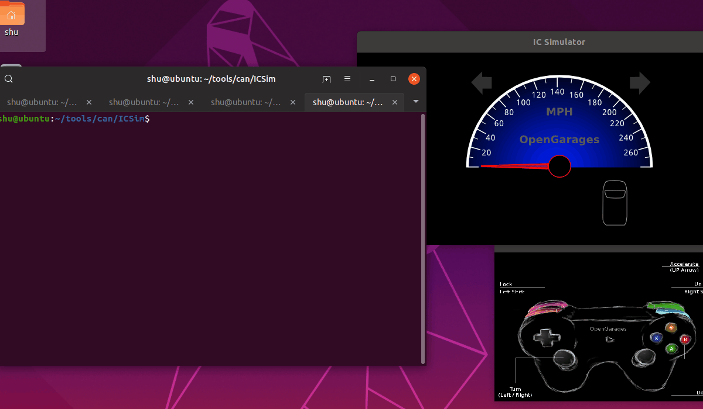

ドア開錠を行うCAN通信を特定する

今回も引き続きシミュレーション環境のICSimでCAN通信の勉強。
前回 はどのCANメッセージがドアをあけるものなのかわからないながらも、通信そのままリプレイさせることでドアの開錠を成功させた。
今回は、どのCANメッセージがドアをあける通信なのか特定を試みる。
環境
Ubuntu 18.04 Desktop
CAN通信をモニターしてフィルタするソフトウェアはいくつか存在する。
が、色々試していくうちに現時点においてはSavvyCANがOSSの中で最高のCANモニターだと思ったのでSavvyCANを使ってドア解錠のメッセージを特定していく。
※カーハッカーズハンドブックではSavvyCANは巻末付録で紹介されているが、内容が古く「SocketCANには対応していない」旨のコメントがある。
現在はSocketCANに対応しているし何ならNetwork経由でもモニタできるようになっているっぽいのでイチオシ。
SavvyCAN のインストール
Qt5のインストール
$ wget https://download.qt.io/official_releases/qt/5.12/5.12.4/qt-opensource-linux-x64-5.12.4.run
$ chmod a+x ./qt-opensource-linux-x64-5.12.4.run
$ sudo ./qt-opensource-linux-x64-5.12.4.run
qtライブラリのインストール
qtserialbusは Ubuntu 18.04 では aptの公式リポジトリに含まれないので自分でビルドする。
$ sudo apt install qtdeclarative5-dev qttools5-dev g++
$ git clone https://github.com/qt/qtserialbus
$ cd qtserialbus
$ /opt/Qt5.12.4/5.12.4/gcc_64/bin/qmake .
$ make
$ sudo make install
SavvyCANのビルド
$ git clone https://github.com/collin80/SavvyCAN
$ cd SavvyCAN
$ /opt/Qt5.12.4/5.12.4/gcc_64/bin/qmake CONFIG+=debug
$ make
起動
./SavvyCAN
vcan0に接続
Connection Settings -> Add New Device Connection で新規接続。
- Connection Type: QT SerialBus Devices
- SerialBus Device Type: socketcan
- Port: vcan0

ICSimを起動しておくと、接続後に大量のCANデータが流れることを確認できる。
SavvyCANを使ってドア開錠通信を特定
まず前提として、CAN通信の話。
リアルタイムに情報が必要となるエンジン・ステアリング・車軸センサー周りのECUは、常に自らの情報を定期的にCANバスを垂れ流しているものだという。
その結果、CANバスには常に情報が溢れているとのこと。
ただ今回はドアの開錠を行う操作を見つけ出す。
これは「トリガー」を発生させることになるので、CANメッセージの中でそのCAN IDは非常に少ない（トリガーごとに1個あるいは数個）ことが予想される。
つまりドア開錠操作を発生させたときに初めて出現するCAN IDを見つけ出す。
SavvyCANではデータが流れる順に表示される標準モード以外に、「Overwrite Mode」という、各CAN IDごとの最新データが表示されるモードが存在する。
表示には統計情報としてCntカラムがあり、そしてクリックでソートできるので、ドア開錠を発生させたときに初めてカラムが追加されCntが非常に少ないようなCAN IDがドア開錠メッセージであることが推測できる。
CANバスをキャプチャしそれっぽいものを探す
ということでやってみた。手順は以下。
- SavvyCANをOverWrite Modeにしておく。
- キャプチャを開始する。
- Cntでソートし、一番少ないCntのところを注視しておく。
- ICSimのコントローラーで左フロントドアを開錠する。
- 開錠操作後に初めて追加されてCntが非常に少ないCAN IDを探す。
動画でどうぞ。

すぐにわかる。ドア開錠メッセージのCAN IDは0x19Bっぽい。データは「00 00 0E 00 00 00」。
ドアが開錠するか試す
実際に試してみる。
SavvyCANのPlayback機能を使って通信を送ることもできるが、今回送るメッセージは１つだけなのでcansendの方がわかりやすい。
$ cansend vcan0 19B#00.00.0E.00.00.00
動画でどうぞ（スマホは見づらいかも）

見事に開いた！SavvyCANいいっすね＾～
全てのドア開錠通信を調べる
ICSimは全てで4つのドアがある。全てのパターンを試したところ、全てCAN IDは 0x19Bだった。
データは以下の対応だった。
| ドアの状態 | 操作 | データ3バイト目 | 2進数 |
|---|---|---|---|
| 全て閉じている | 左フロントドア開錠 | 0E | 0000 1110 |
| 上列操作後の状態 | 右フロントドア開錠 | 0C | 0000 1100 |
| 上列操作後の状態 | 左リアドア開錠 | 08 | 0000 1000 |
| 上列操作後の状態 | 右リアドア開錠(->全て開いた) | 00 | 0000 0000 |
表の2進数を見れば一目瞭然。ドアの状態はドアごとにビットで管理されてるようだ。
ちなみにドアを順次閉じていき、全て閉めたところのCANメッセージは 0F (0000 1111)だった。
特定のドアを開けたい場合は、そのドアに対応したビットを0にして、 CAN IDが 0x19B なメッセージを送れば良さそう。
まとめ
SavvyCANを使ってICSimのCAN通信からドアを開錠するCAN IDを探して再現することができた。
ただこれがドアを開け閉めさせるトリガーとなる通信なのか、それともコントローラ内部でドアを開け閉めしたあと、今のドア状態をみんなに伝えますという意味の通信なのか、どちらかよくわからない。
もし後者ならば、仮に攻撃者が詐称したとしても運転席のメーターパネルが「ドア開いてますよ」とピーピーなるだけで肝心のドアロックは開かないのでは🤔
(実車はどうなってるのか・・・試したいけど車がない😭)
それと、今回はICSimがコントローラーによる操作のときだけ該当通信を発生させていたおかげでCntが極小となり統計解析で見つけやすかったが、全体のドアの状態を送る形式なら原理上定期的にCANメッセージを発生させていてもいいはずなので、もしそうだったら見つけるのは大変だったかも。
(実車はどうなってるのか・・・試したいけど車がない😭)
SavvyCANについて
実際に色々使ってみるとわかりますが、SavvyCANは高機能であるものの、色んなグラフを見るとき特定のデータでnull pointerにアクセスしてクラッシュすることが割とよくあります。
ただ原因はわりと単純だったりするし、しかも開発者のcollin氏もすぐに直してくれるので、バグに気付いたらぜひGithubにPRやissueを投げてもらえると非常に助かります。
自分も使って初日で2箇所もクラッシュにハマりましたが、原因を特定してIssueを投げたり、PRを送ったりしたら1日もせずに修正を取り込んでくれました。
参考
- カーハッカーズハンドブック
https://www.amazon.co.jp/dp/4873118239 - はじめてのCAN/CAN FD
https://www.vector.com/jp/ja/know-how/beginners/beginners-cancan-fd-jp/ - SavvyCAN
https://www.savvycan.com/
次回は何をしよう・・・車が欲しい・・・・。